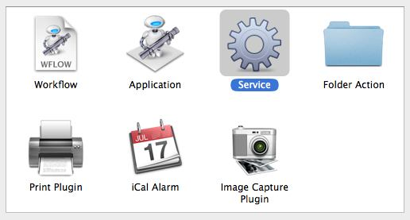
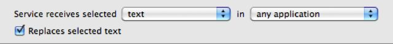
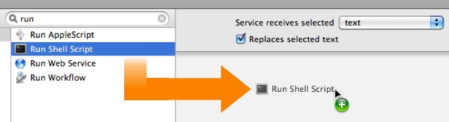
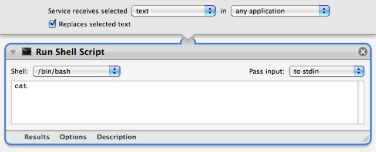
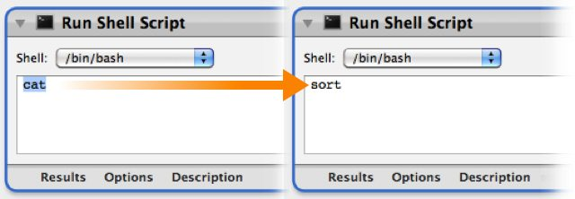
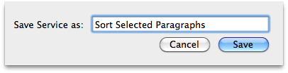
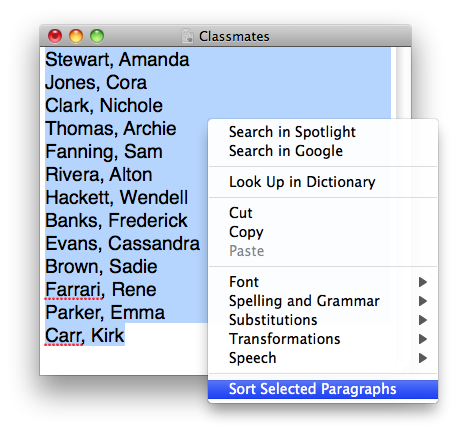

The Paragraph Sorting Service
REQUIRES MAC OS X v10.6
In this tutorial you'll create a service that alphabetically sorts paragraphs selected in a text editor application.
STEP 1 • Open a New Services Workflow
New services are created using the Automator application located in the Applications folder on your computer. Double-click the icon of Otto the automation robot to open Automator. Select the Services template from the template chooser sheet in the forthcoming workflow window.

Click the OK button in the sheet, and a service workflow will be opened.
STEP 2 • Set the Input Settings
A gray bar will be displayed across the top of the workflow area of the Automator window. This bar displays the settings that indicate (1) the type of data to be processed by the workflow, (2) the application in which the service will be available, and (3) whether or not to replace any selected text with the result of the service workflow.

In this tutorial, the service workflow will use the text selected in a word processing application as input, sort the paragraphs of the selected text in alphabetical order, and replace the selected text with the sorted text. Accordingly, these should be the settings for the input dialog in the workflow:

STEP 3 • Add Actions
Now that the input settings have been applied, you can build the service by adding Automator actions to the workflow. Unfortunately, the default action library does not contain an Automator action for sorting paragraphs. But that's no problem, as you will create your own action for accomplishing that task! Locate the appropriate Automator action for creating specialized functionality, by entering the keyword “run” into the search field to the left of the data input bar. A list of actions for performing custom procedures will be displayed in the action list below the search field. Drag the title of the Run Shell Script action to the area after the data settings bar, and release the mouse to add the action to the workflow:

Once the mouse is released, the action will be added to the end of the workflow, and its action view will be displayed. The action view contains any setable parameters used by the action to perform its role in the workflow. The Run Shell Script action is used to perform customized procedures by writing UNIX commands that are processed by the operating system. Now before you panic, or think that this is way over your head, take a breath, relax, and realize that you'll only be writing a single word to complete this action.

In the text field in the action view, change the default command of “cat” to “sort” — that's all you have to do. Leave everything else the same. Sort is special UNIX command that will take the text passed from the previous action, sort it alphabetically, and return the results.

STEP 4 • Save the Service
Choose Save from Automator's File menu and in the drop-down naming sheet, enter the name for this service: Sort Selected Paragraphs

The service is automatically installed into the Services framework for the current user. You may now close the automator window and quit Automator.
STEP 5 • Using the Service
This service is designed to sort text selected in a word processing application such as TextEdit. [NOTE: not all applications support contextual services] Download, and open this example text file of names in TextEdit. Select the names, and either right-click in the selection area, or hold down the control key while clicking the selection area, to summon the contextual menu:

Choose Sort Selected Paragraphs from the contextual menu, and the names in the list will be sorted alphabetically!
Summary
Congratulations! You've created a service for sorting paragraphs by writing a custom Automator action using shell commands. Oh you Power-User you ;-)